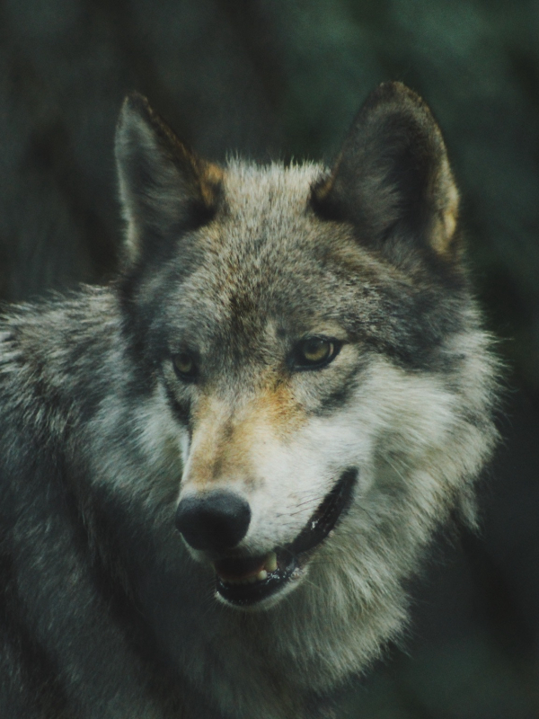
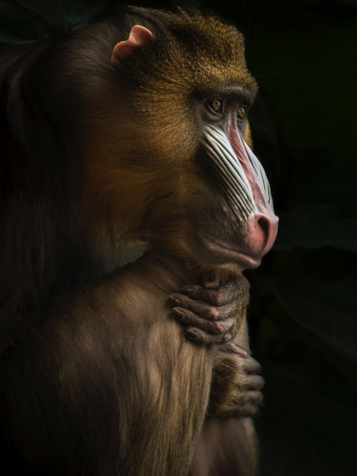
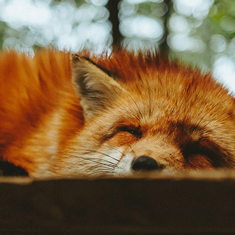
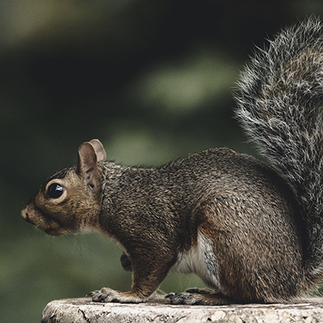
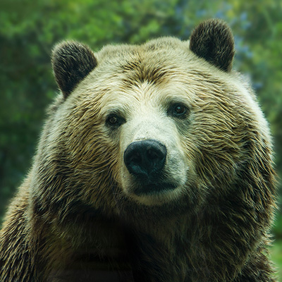
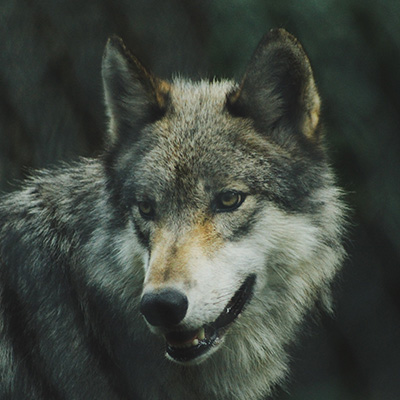
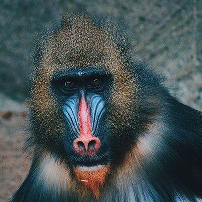
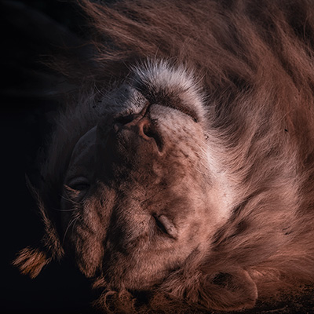

Animais Fantásticos
-

-

-

-

-

-

Raposa
As raposas são animais mamíferos e onívoros pertencentes à família Canidae. São vulpídeos de porte médio, caracterizados por um focinho comprido e uma cauda longa e peluda.
Também apresentam como particularidade suas pupilas ovais, semelhantes às pupilas verticais dos felídeos.
De cerca de 40 espécies reconhecidas como raposas, somente 12 pertencem ao gênero Vulpes das "raposas verdadeiras", do qual a raposa vermelha é a mais comum.
São animais de hábitos geralmente noturnos, que se alimentam de pequenos mamíferos, aves, insetos e frutas, e vivem em tocas.
Esquilo
Os esquilos são pequenos roedores pertencentes à família Sciuridae. São caracterizados por um corpo ágil, olhos grandes e uma cauda longa e peluda, usada para manter o equilíbrio e se proteger do frio.
Habilidosos escaladores, vivem principalmente em árvores e se alimentam de nozes, sementes, frutas e, ocasionalmente, de insetos.
Existem cerca de 280 espécies de esquilos, entre elas os esquilos-terrestres e os esquilos-voadores, que planam entre as árvores com uma membrana entre as patas.
Muitos esquilos enterram sementes para consumir nos períodos de escassez. As sementes esquecidas germinam, o que ajuda na regeneração das florestas.
Urso
Os ursos são mamíferos de grande porte pertencentes à família Ursidae. Têm corpo robusto, pelagem espessa, patas fortes com garras não retráteis e cauda curta.
Possuem um olfato extremamente apurado, que usam para encontrar alimento a quilômetros de distância.
Existem oito espécies de ursos. A maioria é onívora, mas o urso-polar é predominantemente carnívoro e o panda-gigante se alimenta quase só de bambu.
Em regiões frias, algumas espécies, como o urso-pardo, passam o inverno em tocas, em um estado de sono prolongado com metabolismo reduzido.
Lobo
O lobo-cinzento (Canis lupus) é o maior representante da família Canidae. Tem pernas longas, tórax estreito, focinho alongado e uma pelagem densa que o protege do frio.
É um animal carnívoro e vive em matilhas, formadas em geral por um casal reprodutor e seus filhotes de diferentes idades.
Caça em grupo presas maiores que ele, como cervos e alces, e se comunica por meio de uivos, posturas corporais e marcação de território.
O lobo-cinzento é o ancestral do cão doméstico, domesticado há milhares de anos.
Macaco
Os macacos são mamíferos da ordem dos primatas, conhecidos pela inteligência e pela habilidade das mãos, com polegares que permitem segurar objetos com precisão.
Dividem-se em dois grandes grupos: os macacos do Novo Mundo, das Américas, e os do Velho Mundo, da África e da Ásia. Alguns macacos americanos, como o macaco-aranha, têm cauda preênsil, que funciona como uma quinta mão.
Vivem em grupos sociais e se alimentam de frutas, folhas, sementes e insetos, de acordo com a espécie.
Comunicam-se por vocalizações, expressões faciais e gestos, e muitas espécies usam ferramentas simples para obter comida.
Leão
O leão (Panthera leo) é um mamífero carnívoro da família Felidae e um dos maiores felinos do mundo. Vive principalmente nas savanas da África, e há uma pequena população na floresta de Gir, na Índia.
Os machos adultos se distinguem pela juba, que os faz parecer maiores e ajuda a protegê-los em disputas.
É o único felino que vive em grupos sociais, chamados de bandos. Eles reúnem leoas aparentadas, seus filhotes e um ou poucos machos.
As leoas fazem a maior parte da caça, em cooperação. O rugido do leão pode ser ouvido a vários quilômetros de distância e serve para marcar território.
FAQ
- Qual a idade dos animais?
- A idade varia de acordo com a espécie. Em geral, esquilos e raposas vivem alguns anos na natureza, enquanto lobos, ursos, leões e macacos podem passar de uma década, e alguns chegam a mais de 30 anos.
- Eles são fantásticos?
- Sim! Cada espécie tem características únicas, como a cauda do esquilo, o olfato do urso, o uivo do lobo, a juba do leão e a inteligência do macaco.
- Qual a diferença?
- As diferenças estão no tamanho, na alimentação, no habitat e no comportamento. Lobos e leões, por exemplo, são carnívoros e vivem em grupos, enquanto muitos ursos e macacos são onívoros.
- Como proteger?
- Preservando os habitats naturais, evitando o desmatamento e a caça ilegal, não alimentando animais silvestres e apoiando projetos de conservação.






Números
Contato

- contato@origamid.com
- +55 (21) 9999-9999
- Rua do Conde, nº 21
- Rio de Janeiro - RJ
- Doe 0 bitcoin para nos ajudar
- Seg à Sex das 8 às 18